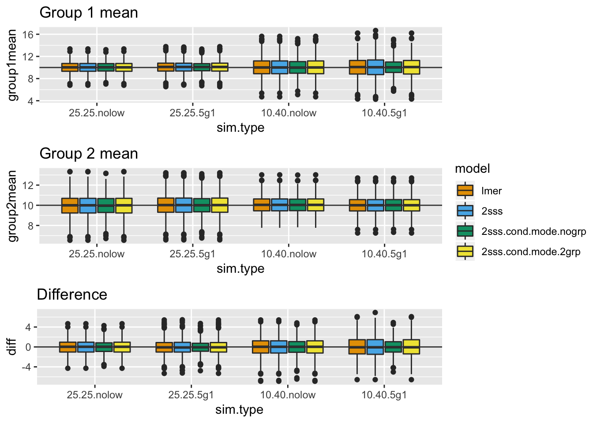
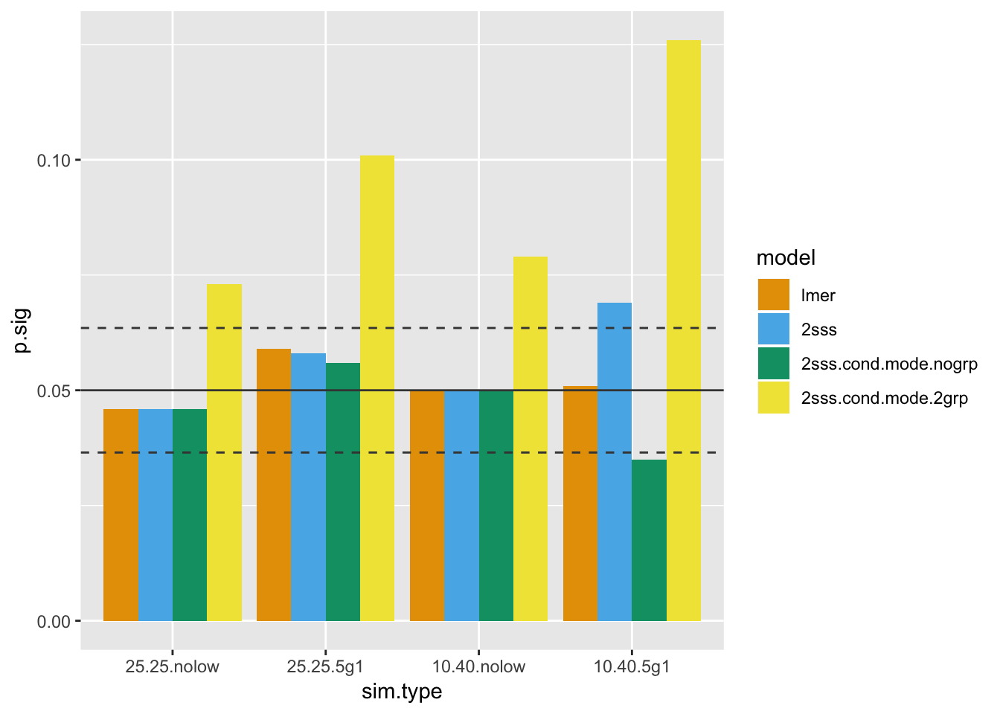
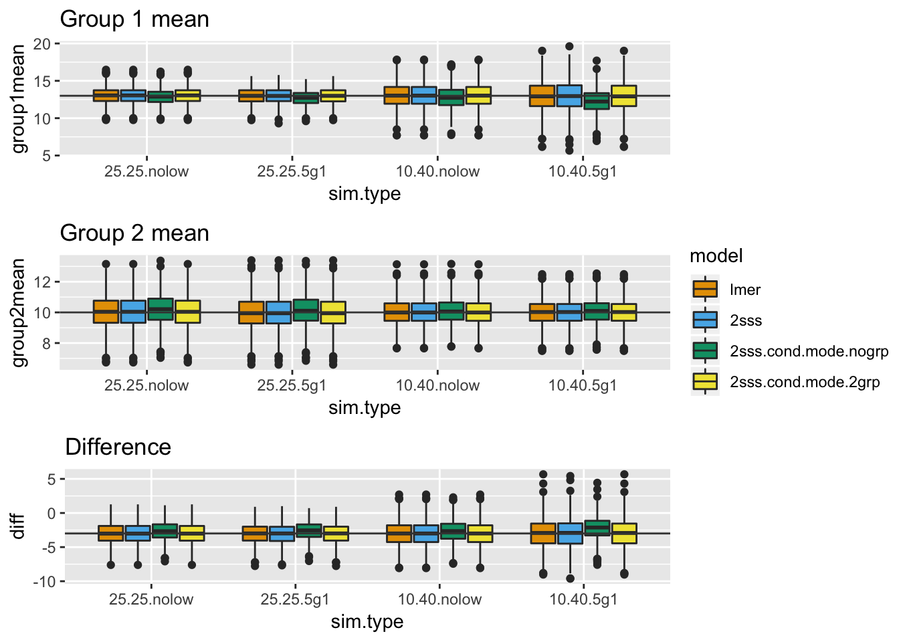
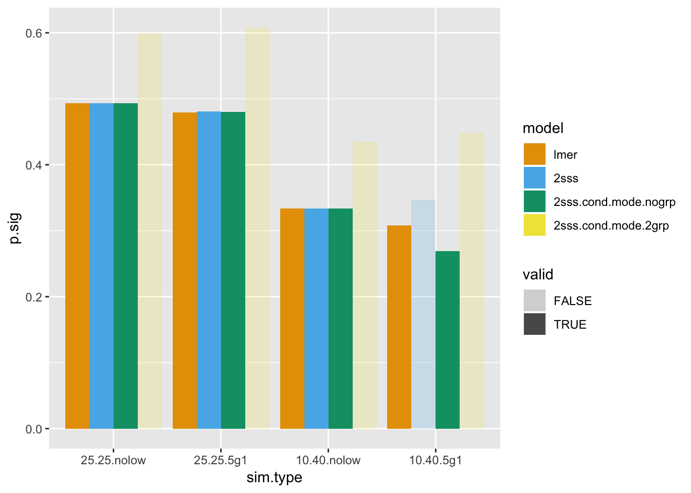

V6: Model strategy comparison - group differences
Group differences of within-subject averages: How do modeling approaches compare with unequal groups and unequal observations within-subject?
Introduction
This chapter accompanies the 6th video in the series, “Can the regularization in mixed models be problematic?”. Previous chapters focused on the regularization built into a mixed model. As I mentioned earlier, when I explained this to a colleague of mine, she asked how the regularization would impact her results. She’s studying a patient group that tends to be much smaller than her control group and often she also has less data per subject in her patient group. Will the regularization of the mixed model hurt her power to detect group differences? In this chapter I focus on different approaches to modeling the data (mixed models, 2SSS and two pseudo 2SSS approaches) to investigate type I error and power when data are both balanced and unbalanced within-group and within-subject. Additionally, these simulations will address my previous comments about why the conditional modes are not the perfect way of viewing regularization.
Modeling strategies considered
There are four modeling approaches, total. First, the standard mixed model, with the group variable as a fixed effect and a random intercept. Second, the 2SSS using OLS at both stages. The last two models are similar to 2SSS, but for the first stage use conditional mode-based subject estimates from each of two different mixed models: one that models group as a fixed effect and one that does not. Although it is easy to argue that neither of these pseudo 2SSS models makes any sense, I can assure you that I have definitely seen this done in practice and therefore wanted to discuss it here. As we will see, neither of these approaches is a good idea. Surely, the second pseudo 2SSS model is most nonsensical since the model from which the conditional modes are extracted actually contains the inference of interest (group difference). Why do that extra work?
First think through how each of these approaches might behave. The 2SSS approach will not deal with the differing number of time points, so I would expect to see some issues there due to the variance differences between groups. For the mixed model there shouldn’t be an issue. Sure, there could be some regularization, but since each group’s mean is modeled, the bias would be toward the group means and not the overall mean. The conditional modes from the model with an intercept only will definitely yield some bias that could hide or emphasize the difference between groups. Also, the extra variability introduced by using these predicted values will likely lead to an underestimate of the variance. The 2SSS with conditional modes from the two group mixed model should have less bias, but the variance estimates will still be incorrect.
A very important consideration when you are interested in power, is you must first verify the type I error is controlled. That is how these simulations are set up. For the type I error investigation, the group means are set equal to each other. Then power is investigated in all scenarios, but it is very important to ignore the power estimates for the models that were not found to have controlled type I error. For that reason I have only put “ghosts” of the power estimates for those models in the plots. Bias is also important. Obviously the mixed model’s conditional modes will be biased on purpose, but we don’t want our final estimates to also be biased, because that can be misleading. You should suspect the pseudo 2SSS using conditional modes from the mixed model without modeling group will have a biased group difference estimate.
In the following the function for data simulation is constructed first, followed by a function that runs the analyses on numerous data sets so type I error and power can be calculated. After that I run 4 simulations for different study designs investigating type I error. Last power is estimated across the four designs. You are highly encouraged to try out your own designs. I have made the functions fairly flexible so you could do so. Do keep in mind that quite a few simulations are required and so it will take some time for them to complete.
Functions for data simulation and analyses
This first function simulates data for two groups. The code should seem very familiar, since it is based on the previous chapters that simulated data using the 2 stage approach. The one difference is there is a group variable here, while the previous simulations were for a single group.
library(lme4)
library(lmerTest)
library(ggplot2)
library(knitr)
library(tidyverse)
library(ggpubr)
make.data.grps = function(win, btwn, n.win.sub, group.vec, grp1.mean, grp2.mean){
#win: A vector of the within-subject sd of length nsub
#btwn: Scalar, the between-subject sd
# group.vec: 1's and 0's indicating group membership. Length nsub.
# grp1.mean: Mean for group 1 (group.vec=0)
# grp2.mean: Mean for group 2 (group.vec=1)
nsub = length(group.vec)
# Simulate means for each subject
mns.sub = grp1.mean*group.vec + (1-group.vec)*grp2.mean + rnorm(nsub, mean = 0, sd = btwn)
# Simulate data within-subject
y =c()
id = c()
grp.all = c()
for (i in 1:nsub){
y.loop = rnorm(n.win.sub[i],
mean = mns.sub[i], sd = win[i])
y = c(y, y.loop)
id = c(id, rep(i, n.win.sub[i]))
grp.all = c(grp.all, rep(group.vec[i], n.win.sub[i]))
}
id = as.factor(id)
dat.mod = data.frame(id, y, grp.all)
return(dat.mod)
}This function is created to run the simulation and organize the output. We will investigate the mean estimates for each group, the standard error of the difference in means according to each model, and the p-values, which will be used to either calculate power or type I error.
run.sim = function(nsim, win, n.win.sub, btwn, group.vec, grp1.mean, grp2.mean, rand.ord.nsub){
#nsim: Number of simulations
#win: within-subject variances. Vector of length nsub
#n.win.sub: Number of measures within-subject. Vector of length nsub
#btwn: between-subject variance
#group.vec: 1/0 vector indicating groups
#grp1.mean, grp2.mean: Group means
#rand.ord.nsub: Randomly order subjects (mixes up n.win.sub so random subjects have smaller n)
g1.mean.lmer = rep(NA, nsim)
g2.mean.lmer = rep(NA, nsim)
g1.mean.2sss = rep(NA, nsim)
g2.mean.2sss = rep(NA, nsim)
g1.mean.2sss.cond.mode.2grp = rep(NA, nsim)
g2.mean.2sss.cond.mode.2grp = rep(NA, nsim)
g1.mean.2sss.cond.mode.nogrp = rep(NA, nsim)
g2.mean.2sss.cond.mode.nogrp = rep(NA, nsim)
diff.se.lmer = rep(NA, nsim)
diff.se.2sss = rep(NA, nsim)
diff.se.2sss.cond.mode.2grp = rep(NA, nsim)
diff.se.2sss.cond.mode.nogrp = rep(NA, nsim)
p.lmer = rep(NA, nsim)
p.2sss = rep(NA, nsim)
p.2sss.cond.mode.2grp = rep(NA, nsim)
p.2sss.cond.mode.nogrp = rep(NA, nsim)
for (i in 1:nsim) {
# This is used when I want to randomly
# select who has less data
nsub = length(group.vec)
if (rand.ord.nsub == 'yes'){
n.win.sub = sample(n.win.sub)
}
# Generate the data
dat.mod = make.data.grps(win, btwn, n.win.sub,
group.vec, grp1.mean,
grp2.mean)
# Run the 4 models
# mixed model
mod.lmer = lmer(y ~ 1 + grp.all + (1 | id), dat.mod)
# 2SSS OLS
# trick for getting OLS means for each subject
ols.stage1 = lm(y ~ id -1, dat.mod)$coeff
twosss = lm(ols.stage1 ~ group.vec)
# 2SSS using cond modes from model including group
# pull out conditional modes
cond.modes.2grp.mod = coef(mod.lmer)$id[, 1]+
coef(mod.lmer)$id[, 2]*group.vec
twosss.cond.mode.2grp = lm(cond.modes.2grp.mod ~
group.vec)
#2SSS using cond modes from model without group
mod.lmer.nogroup = lmer(y ~ 1 + (1 | id), dat.mod)
cond.modes.nogroup.mod = coef(mod.lmer.nogroup)$id[, 1]
twosss.cond.mode.nogrp = lm(cond.modes.nogroup.mod ~
group.vec)
g1.mean.lmer[i] = sum(fixef(mod.lmer))
g2.mean.lmer[i] = fixef(mod.lmer)[1]
g1.mean.2sss[i] = sum(coef(twosss))
g2.mean.2sss[i] = coef(twosss)[1]
g1.mean.2sss.cond.mode.2grp[i] = sum(coef(twosss.cond.mode.2grp))
g2.mean.2sss.cond.mode.2grp[i] = coef(twosss.cond.mode.2grp)[1]
g1.mean.2sss.cond.mode.nogrp[i] = sum(coef(twosss.cond.mode.nogrp))
g2.mean.2sss.cond.mode.nogrp[i] = coef(twosss.cond.mode.nogrp)[1]
diff.se.lmer[i] = summary(mod.lmer)$coeff[2,2]
diff.se.2sss[i] = summary(twosss)$coeff[2,2]
diff.se.2sss.cond.mode.2grp[i] = summary(twosss.cond.mode.2grp)$coeff[2,2]
diff.se.2sss.cond.mode.nogrp[i] = summary(twosss.cond.mode.nogrp)$coeff[2,2]
p.lmer[i] = summary(mod.lmer)$coeff[2,5]
p.2sss[i] = summary(twosss)$coeff[2,4]
p.2sss.cond.mode.2grp[i] = summary(twosss.cond.mode.2grp)$coeff[2,4]
p.2sss.cond.mode.nogrp[i] = summary(twosss.cond.mode.nogrp)$coeff[2,4]
}
# put it all into a data frame
out = data.frame(g1.mean.lmer, g2.mean.lmer,
g1.mean.2sss, g2.mean.2sss,
g1.mean.2sss.cond.mode.2grp,
g2.mean.2sss.cond.mode.2grp,
g1.mean.2sss.cond.mode.nogrp,
g2.mean.2sss.cond.mode.nogrp,
diff.se.lmer, diff.se.2sss, diff.se.2sss.cond.mode.2grp,
diff.se.2sss.cond.mode.nogrp, p.lmer,
p.2sss, p.2sss.cond.mode.2grp,
p.2sss.cond.mode.nogrp)
return(out)
}Type I error
This first batch of simulations will calculate the type I error. In order to do so, the means for the groups are set to be equal (10). I would recommend at least 1000 simulations if you were to run this on your own. The code allows you to change the within-subject variance across subjects, but all model estimation methods assume a constant within-subject variance, so there wasn’t really a reason to vary that here. Feel free to try it out on your own! I start of with balanced groups where either everybody has 30 observations or one group has 5 subjects with only 5 observations. Then, to mimic the real life data my colleague has where her patient group is much smaller and often have less data, I set the group sizes to 10 and 40 where they either all have 30 observations or half the patients only have 5 observations.
I realize the settings are a bit extreme, BUT if I can break a model in the extreme I will never ever use it on my real data. Why take the risk when I don’t know how “extreme” my real data are. If I can’t break a model in the extreme, then I know I can probably almost always trust that model.
By the way, if you’ve been paying close attention, take a look at the simulation settings and think back to the previous chapter. You will see there are differences in model performance here, but what would likely make them more similar? Hint: You’d need to change one number in the simulations I ran below. Again, aiming for the extreme to see what breaks!
# 25 subjects each group, everybody has 30 observations
nsim = 1000
win = rep(10, 50)
n.win.sub = rep(30, 50)
btwn = 5
group.vec = rep(c(1, 0), each = 25)
# Set the means equal, since we're looking at Type I error
grp1.mean = 10
grp2.mean = 10
rand.ord.nsub = 'no'
out.25.25.nolow.type1 = run.sim(nsim, win, n.win.sub, btwn,
group.vec, grp1.mean,
grp2.mean, rand.ord.nsub)
# Change so 5 in first group have low n
n.win.sub[1:5] = 5
out.25.25.5g1.type1 = run.sim(nsim, win, n.win.sub, btwn,
group.vec, grp1.mean,
grp2.mean, rand.ord.nsub)
#imblanaced groups with equal n
n.win.sub = rep(30, 50)
group.vec = c(rep(1, 10), rep(0, 40))
out.10.40.nolow.type1 = run.sim(nsim, win, n.win.sub, btwn,
group.vec, grp1.mean, grp2.mean,
rand.ord.nsub)
# imbalanced groups with some in small group with low n
n.win.sub[1:5] = 5
out.10.40.5g1.type1 = run.sim(nsim, win, n.win.sub, btwn,
group.vec, grp1.mean, grp2.mean,
rand.ord.nsub)The following rearranges the data for plotting. First, the mean estimates (within each group and difference of means) are presented for each combination of data setup and analysis type. The boxplots are constructed from the estimates across the simulations. Look for bias in these estimates. Since the truth is known, I have overlayed lines to indicate the true value. Also, one would typically look to see if the estimates varied differently across the models. They do not in this case. There is a discussion about the plots after they are displayed.
# arrange for plotting
cbPalette <- c("#E69F00", "#56B4E9", "#009E73", "#F0E442", "#0072B2", "#D55E00", "#CC79A7","#999999")
dat.all.type1 = rbind(out.25.25.nolow.type1,
out.25.25.5g1.type1,
out.10.40.nolow.type1,
out.10.40.5g1.type1)
dat.all.type1$sim.type = factor(rep(c("25.25.nolow",
"25.25.5g1",
"10.40.nolow",
"10.40.5g1"),
each =nsim), levels =
c("25.25.nolow", "25.25.5g1",
"10.40.nolow", "10.40.5g1"))
dat.all.type1$n1 = rep(c(25, 25, 10, 10), each = nsim)
dat.all.type1$n2 = rep(c(25, 25, 40, 40), each = nsim)
dat.all.type1$lown = rep(c("none", "5 in g1", "none",
"5 in g1"),
each = nsim)
col.g1.mean = grep('g1.mean', names(dat.all.type1),
fixed = T)
dat.all.g1.mean.type1 = dat.all.type1 %>%
gather(key="key",
value="group1mean",
col.g1.mean) %>%
separate(key,
c("junk1", "model"),
sep = "g1.mean.")
dat.all.g1.mean.type1$model = factor(dat.all.g1.mean.type1$model,
levels =
c("lmer", "2sss",
"2sss.cond.mode.nogrp",
"2sss.cond.mode.2grp"))
g1.plot.type1 = ggplot(dat.all.g1.mean.type1, aes(x = sim.type,
y = group1mean,
fill = model)) +
geom_boxplot() +
geom_hline(yintercept = 10, color = "gray26") +
scale_fill_manual(values=cbPalette)+
ggtitle("Group 1 mean")
# Repeat for g2
col.g2.mean.type1 = grep('g2.mean', names(dat.all.type1), fixed = T)
dat.all.g2.mean.type1 = dat.all.type1 %>%
gather(key="key", value="group2mean",
col.g2.mean.type1) %>%
separate(key, c("junk1", "model"),
sep = "g2.mean.")
dat.all.g2.mean.type1$model = factor(dat.all.g2.mean.type1$model,
levels = c("lmer", "2sss",
"2sss.cond.mode.nogrp",
"2sss.cond.mode.2grp"))
g2.plot.type1 = ggplot(dat.all.g2.mean.type1,
aes(x = sim.type, y = group2mean,
fill = model)) + geom_boxplot() +
geom_hline(yintercept = 10, color = "gray26")+
scale_fill_manual(values=cbPalette)+
ggtitle("Group 2 mean")
# Estimate the differences and then plot the differences
dat.all.diff.type1 = left_join(dat.all.g1.mean.type1, dat.all.g2.mean.type1)
dat.all.diff.type1$diff = dat.all.diff.type1$group2mean -
dat.all.diff.type1$group1mean
dat.all.diff.type1$model = factor(dat.all.diff.type1$model,
levels = c("lmer", "2sss",
"2sss.cond.mode.nogrp",
"2sss.cond.mode.2grp"))
diff.plot.type1 = ggplot(dat.all.diff.type1, aes(x = sim.type,
y = diff,
fill = model)) +
geom_boxplot() +
geom_hline(yintercept = 0, color = "gray26")+
scale_fill_manual(values=cbPalette)+
ggtitle("Difference")
# plot all 3 together
ggarrange(g1.plot.type1, g2.plot.type1, diff.plot.type1, common.legend = TRUE,
nrow = 3, legend = "right")
In the above plots, there is no bias present. This doesn’t mean all methods are generally unbiased, it simply means when both group means are 0 there isn’t bias. Think about how the regularization works in the mixed model and ask yourself whether it makes sense that there isn’t bias here, even when some subjects have much less data. Do you predict there will be bias when the group means are different from each other?
Next the standard error of the group differences will be displayed. Generally we want our standard errors to be small BUT that’s only helpful if our resulting inferences are valid (type I error is controlled). The setup is similar to the last plots.
# Look at the standard errors
col.se.type1 = grep('diff.se', names(dat.all.type1), fixed = T)
dat.all.se.type1 = dat.all.type1 %>%
gather(key="key", value="se", col.se.type1) %>%
separate(key, c("junk1", "model"),
sep = "diff.se.")
dat.all.se.type1$model = factor(dat.all.se.type1$model,
levels = c("lmer", "2sss",
"2sss.cond.mode.nogrp",
"2sss.cond.mode.2grp"))
ggplot(dat.all.se.type1, aes(x = sim.type, y = se, fill = model)) +
geom_boxplot() + scale_fill_manual(values=cbPalette)
It is tempting to get excited about the pseudo 2SSS approaches that use conditional modes based on these standard error distributions BUT remember, we still haven’t looked at type I error and fully investigated bias.
Next up is the type I error investigation, which clearly ends any hope one may have had for the 2SSS model using the conditional mode from the mixed model that had group included as a fixed effect. It doesn’t matter in real life, though, since if one already ran that model they wouldn’t have likely continued to extract conditional modes, etc, because the inference for the group difference was already included in the mixed model and, as the plot shows, the type I errors are preserved in those cases.
There are horizontal lines at 0.05 (solid) and the 95% confidence interval (dashed). We will use type I error beyond the upper confidence bound as the threshold for an invalid test, which will be used to help interpret the power results later.
# Calculate type I error
col.p = grep('p.', names(dat.all.type1), fixed = T)
dat.all.p.type1 = dat.all.type1 %>%
gather(key="key", value="pval", col.p) %>%
separate(key, c("junk1", "model"), sep = "p.")
dat.all.p.type1$p.sig = dat.all.p.type1$pval <= 0.05
type1.mat = aggregate(p.sig ~ sim.type + model,
data = dat.all.p.type1, mean)
type1.mat$model = factor(type1.mat$model,
levels = c("lmer", "2sss",
"2sss.cond.mode.nogrp",
"2sss.cond.mode.2grp"))
#bound for type I error (upper bound 95% CI)
bound.up = .05+qnorm(1-0.05/2)*sqrt(0.05*(1-0.05)/nsim)
bound.low = .05-qnorm(1-0.05/2)*sqrt(0.05*(1-0.05)/nsim)
ggplot(type1.mat, aes(x=sim.type, y = p.sig, fill = model)) + geom_bar(stat = "identity", position=position_dodge())+ scale_fill_manual(values=cbPalette)+
geom_hline(yintercept = bound.up,color = "gray26", linetype = "dashed")+
geom_hline(yintercept = bound.low,color = "gray26", linetype = "dashed")+
geom_hline(yintercept = 0.05,color = "gray26")
So far the 2SSS using conditional modes from the mixed model including group is a clear loser. Also, we can see that the OLS-based 2SSS fails when the smaller group has subjects with missing data. This actually makes complete sense since this is exactly what Welch’s t-test is for! Specifically heteroscedasticity, which in this case is driven by the differing within-subject sample sizes. Standard OLS won’t do anything for differing variances, but the mixed model does incorporate this information when the variance differences is driven by different sample sizes.
Last, the 2SSS approach where the conditional mode from the model without group looks somewhat hopeful here, but stay tuned. There’s no avenue for bias to creep in due to the regularization here, since the means for both groups are set to zero!
Power
The same setup is used below, but the mean for the first group has been increased to 13, so the true difference between groups is 3. I haven’t calculated what the true power should be in this case, so power will just be compared between different models within the same data type, but ignoring any power results for which the type I error was not controlled.
# 25 subjects each group, everybody has 30 observations
win = rep(10, 50)
n.win.sub = rep(30, 50)
btwn = 5
group.vec = rep(c(1, 0), each = 25)
grp1.mean = 13
grp2.mean = 10
rand.ord.nsub = 'no'
out.25.25.nolow = run.sim(nsim, win, n.win.sub, btwn,
group.vec, grp1.mean,
grp2.mean, rand.ord.nsub)
# Change so 5 in first group have low n
n.win.sub[1:5] = 5
out.25.25.5g1 = run.sim(nsim, win, n.win.sub, btwn,
group.vec, grp1.mean,
grp2.mean, rand.ord.nsub)
#imblanaced groups with equal n
n.win.sub = rep(30, 50)
group.vec = c(rep(1, 10), rep(0, 40))
out.10.40.nolow = run.sim(nsim, win, n.win.sub, btwn,
group.vec, grp1.mean, grp2.mean,
rand.ord.nsub)
# imbalanced groups with some in small group with low n
n.win.sub[1:5] = 5
out.10.40.5g1 = run.sim(nsim, win, n.win.sub, btwn,
group.vec, grp1.mean, grp2.mean,
rand.ord.nsub)Starting again with plots of the within-group means and mean difference. You can definitely see some bias showing. Try and understand where the bias is coming from and why it is in the direction it is. Even though all results are present here, recall we’ve written off the 2SSS using conditional modes from the mixed model that included group. Also, the 2SSS for imbalanced groups where one group has less data.
# arrange for plotting
cbPalette <- c("#E69F00", "#56B4E9", "#009E73", "#F0E442", "#0072B2", "#D55E00", "#CC79A7","#999999")
dat.all = rbind(out.25.25.nolow, out.25.25.5g1,
out.10.40.nolow, out.10.40.5g1)
dat.all$sim.type = factor(rep(c("25.25.nolow", "25.25.5g1",
"10.40.nolow", "10.40.5g1"),
each =nsim), levels =
c("25.25.nolow", "25.25.5g1",
"10.40.nolow", "10.40.5g1"))
dat.all$n1 = rep(c(25, 25, 10, 10), each = nsim)
dat.all$n2 = rep(c(25, 25, 40, 40), each = nsim)
dat.all$lown = rep(c("none", "5 in g1", "none", "5 in g1"),
each = nsim)
col.g1.mean = grep('g1.mean', names(dat.all), fixed = T)
dat.all.g1.mean = dat.all %>%
gather(key="key",
value="group1mean",
col.g1.mean) %>%
separate(key,
c("junk1", "model"),
sep = "g1.mean.")
dat.all.g1.mean$model = factor(dat.all.g1.mean$model,
levels =
c("lmer", "2sss",
"2sss.cond.mode.nogrp",
"2sss.cond.mode.2grp"))
g1.plot = ggplot(dat.all.g1.mean, aes(x = sim.type,
y = group1mean,
fill = model)) +
geom_boxplot() +
geom_hline(yintercept = 13,
color = "gray26") +
scale_fill_manual(values=cbPalette)+
ggtitle("Group 1 mean")
# Repeat for g2
col.g2.mean = grep('g2.mean', names(dat.all), fixed = T)
dat.all.g2.mean = dat.all %>%
gather(key="key", value="group2mean",
col.g2.mean) %>%
separate(key, c("junk1", "model"),
sep = "g2.mean.")
dat.all.g2.mean$model = factor(dat.all.g2.mean$model,
levels = c("lmer", "2sss",
"2sss.cond.mode.nogrp",
"2sss.cond.mode.2grp"))
g2.plot = ggplot(dat.all.g2.mean, aes(x = sim.type, y = group2mean, fill = model)) +
geom_boxplot() +
geom_hline(yintercept = 10, color = "gray26") +
scale_fill_manual(values=cbPalette)+ggtitle("Group 2 mean")
# Estimate the differences and then plot the differences
dat.all.diff = left_join(dat.all.g1.mean, dat.all.g2.mean)
dat.all.diff$diff = dat.all.diff$group2mean -
dat.all.diff$group1mean
dat.all.diff$model = factor(dat.all.diff$model,
levels = c("lmer", "2sss",
"2sss.cond.mode.nogrp",
"2sss.cond.mode.2grp"))
diff.plot = ggplot(dat.all.diff, aes(x = sim.type, y = diff,
fill = model)) +
geom_boxplot() + geom_hline(yintercept = -3,
color = "gray26")+
scale_fill_manual(values=cbPalette)+
ggtitle("Difference")
# plot all 3 together
ggarrange(g1.plot, g2.plot, diff.plot, common.legend = TRUE,
nrow = 3, legend = "right")
There is always some bias on the 2SSS approach that used conditional modes from the mixed model without a fixed effect for group. It gets worse when group 1 is small and some of those subjects only had 5 observations, because that’s when the regularization will be strongest and the regularization is pulling the estimates toward the overall mean, not the mean of group 1. The bias is not present in the 2SSS model that uses the conditional modes from the mixed model with group because the bias in that case will be toward the group mean instead of the overall mean.
An important point to make here is the bias is in the direction of the null. So, although the standard errors are too small, this is overridden by the bias causing the difference estimate to also be too small.
Moving on to the standard errors, the results are similar to before.
# Look at the standard errors
col.se = grep('diff.se', names(dat.all), fixed = T)
dat.all.se = dat.all %>%
gather(key="key", value="se", col.se) %>%
separate(key, c("junk1", "model"),
sep = "diff.se.")
dat.all.se$model = factor(dat.all.se$model,
levels = c("lmer", "2sss",
"2sss.cond.mode.nogrp",
"2sss.cond.mode.2grp"))
ggplot(dat.all.se, aes(x = sim.type, y = se, fill = model)) + geom_boxplot() + scale_fill_manual(values=cbPalette)
Last, but not least, power. I have faded out the bars of the power for the methods that were found to not be valid when type I error was estimated above.
# Calculate power
col.p = grep('p.', names(dat.all), fixed = T)
dat.all.p = dat.all %>%
gather(key="key", value="pval", col.p) %>%
separate(key, c("junk1", "model"), sep = "p.")
dat.all.p$p.sig = dat.all.p$pval <= 0.05
pow.mat = aggregate(p.sig ~ sim.type + model,
data = dat.all.p, mean)
pow.mat$model = factor(pow.mat$model,
levels = c("lmer", "2sss",
"2sss.cond.mode.nogrp",
"2sss.cond.mode.2grp"))
# Add in valid test info from type 1 error
valid.info = type1.mat[,c("sim.type", "model", "valid")]
pow.mat = full_join(pow.mat, valid.info)
ggplot(pow.mat, aes(x=sim.type, y = p.sig, fill = model, alpha = valid)) + geom_bar(stat = "identity", position=position_dodge())+ scale_fill_manual(values=cbPalette)+scale_alpha_discrete(range = c(0.2, 1))
Firstly, the star of the show, not surprisingly, is lmer. Not only was type I error always, preserved, but it either ties for highest power or has the highest power. Also, remember it was only 1 simple line of code. The 2SSS almost looks like the winner when the patient group is smaller and some patients have fewer data points, but that test had inflated type I error, so the power cannot be considered. As far as the 2SSS approach using conditional modes from the mixed model without group, it seems like maybe this one is okay but remember that bias! Biased estimates aren’t going to be of much use, so that model cannot be recommended.
Summary
Overall, when comparing group means the mixed model is the safest bet. The clear loser is the pseudo 2SSS using conditional modes from the model with group as a fixed effect. The OLS-based 2SSS approach might be okay in a pinch if your groups are balanced and data within-subject are balanced, but I will remind you the mixed model was a single line of code. The psuedo 2SSS approach with conditional modes extracted from the mixed model without an intercept may yield biased results, due to the regularization, so it should also be avoided.
I would like to circle back to when I used the conditional modes to illustrate the regularization earlier. I kept mentioning that they were not perfect and these simulations show why. The estimates from the 2SSS approach using conditional modes that modeled group were extracted from the exact same model used for the lmer results, yet look how different the performance is! I know it is often the case that these values are plotted in manuscripts to help understand what the individual subjects were doing BUT it is very important when you make plots that they are representative of what the model was actually doing. In this case it can be misleading so I would recommend one be careful if using such plots and make sure the reader understands that the values are simply predictions with high variability and do not perfectly represent how individual subjects behaved in the model. Again, this is because the mixed model isn’t actually using those estimates and those estimates are very noisy predictions. So, they were nice for visualizing how the regularization works, but they are not the same as what is going on inside of the model!
If you haven’t already figured it out, I have set the between-subject variance to be quite small here. If increased, the results will be more similar across modeling approaches. Since we don’t know what our true within- and between-subject variances are, I would never assume the between subject was large enough that I didn’t need to worry when it is often the case that I can simply use the appropriate model.